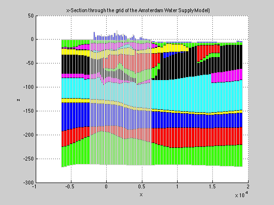
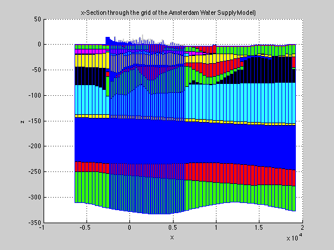
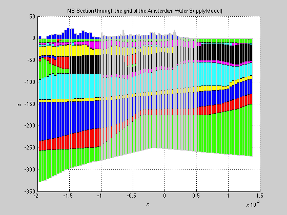
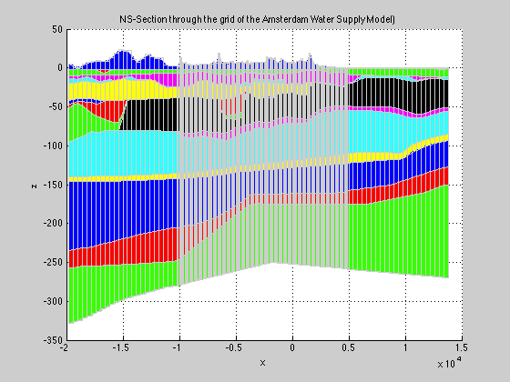
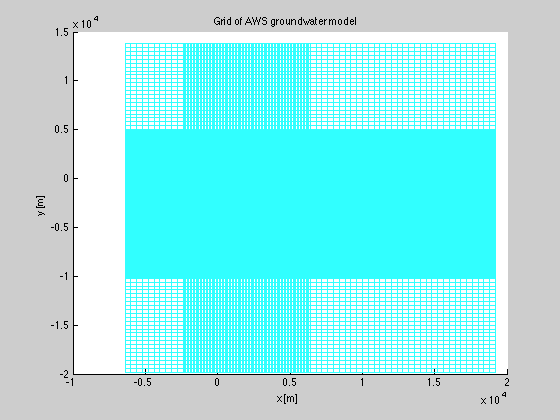
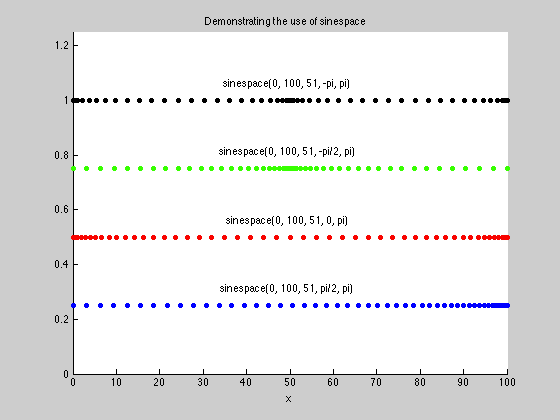
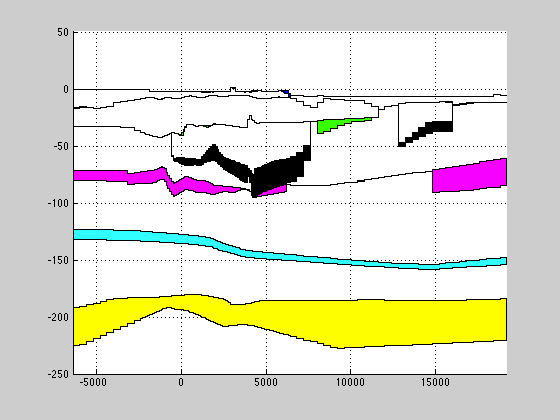
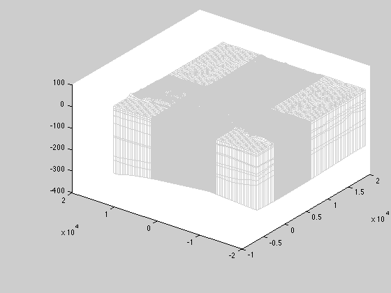

Tutorial for using the gridObj
Teaches and demonstrates the use of the gridObj to generate and manipulate grid and 3D data arrays
Contents
- Objects in general and gridObj objects in mfLab
- Example of how to generate a gridObj
- Example 3D grid of the Amsterdam Water Supply Groundwater model
- The plotXSec has more options and can also be used in the y-direction
- Instead of staircase lines around the cells as they are, continuous lines are possible
- Surface area of entire grid
- Volume of subgrid cells
- Grid line coordinates are sorted and made unique
- Further grid-generating arguments LAYCBD, MINDZ and AXIAL.
- If you have wells of class wellObj you can plot them
- Generating grid arrays using method gridObj.const
- other useful parameters are tops and bottoms of layers and confining beds
- Advanced use of plotXSec
- Switching between 2D and 3D
- MINDZ
- AXIAL
- Generating starting points for particle tracking with MODPATH
- Check grid generation using a simple grid of 3 by 3 by 3
- iFace = 0 implies distribution of points in the interior of the cell
- Put all these starting points in the same zone
- Get their relative locations in the from as required by MODPATH
- Plot the starting points in the grid
Objects in general and gridObj objects in mfLab
Objects are "things" (instantiations) of a class defining its behavior and the data it can hold. Each Object may be regarded a container holding its class-specific data while all objects of the same class share common behavior. This behavior may be influenced by the actual data carried by a specific object. Grid objects belonging to the class gridObj are examples. Each grid object defines a finite difference grid. is an example of a class. Each instance may hold a different grid but all share behavior or functionality as defined by the methods (functions) of the class. For example a grid can provide the volume of each cell, area of cells, but can also plot itself.
The gridObj is a class instantiations of which define a finite difference model grid or mesh. The gridObj to mfLab. mfLab tries to make modelling as independent of a specific grid as feasible. Users should have to deal with grid specifics as little as possible.
To best practice with mfLab is to learn working with the grid object, observe its functionality and its use. Examples are given through this tutorial.
Grid objects are always 3D as everything in mfLab. A finite difference grid is generated with the coordinates of the gridlines for the 3 directions specified: xGr, yGr, zGr. Extra parameters that may be used when generating a grid are LAYCBD and MINDZ. For now forget about LAYCBD and MINDZ. xGr, yGr and zGr define the coordinates of the grid lines, not the grid centers. The model is always aligned with its grid coordinates.
Example of how to generate a gridObj
Define gridlines in the three directions:
xGr = [-1000:100:2000 -250:25:250]; yGr = [-500:50:500 -200:20:200]; zGr = [ 0 -10 -20 -25 -40 -50 -80]; gr = gridObj(xGr,yGr,zGr); % Notice that fully irregular grids may be obtained by specifying zGr as % a full 3D array holding the tops and bottoms of all % cells. These tops and bottoms can be different for each column, % as is the case for a 3D Modflow model.
Example 3D grid of the Amsterdam Water Supply Groundwater model
The 3D grid of the Amsterdam Water Supply Groundwater model is contained in the file data.mat which contains xGr,yGr and Z in model coorrdinates, i.e. local coordinates with the main y-axis parallel to the North-Sea coast.
load data
gr = gridObj(xGr,yGr,Z);
Nothing seems to happen because the semi-colon suppresses the result being printed, but the grid object no exists. To show its contents one may type
gr
gr =
gridObj
Properties:
type: 'gridObj'
MINDZ: 1.0000e-03
AXIAL: 0
LAYCBD: [17x1 double]
isLay: [17x1 logical]
xGr: [1x131 double]
yGr: [199x1 double]
zGr: [1x1x18 double]
xw0: 0
yw0: 0
zw0: 0
anglew: 0
layersAreUniform: 0
size: [198 130 17]
sizeLay: [198 130 17]
sizeCBD: [198 130 0]
sizeFULL: [198 130 17]
Nxy: 25740
Nxyz: 437580
ITlay: [17x1 double]
ITcbd: [0x1 double]
IBlay: [17x1 double]
IBcbd: [0x1 double]
Nx: 130
Ny: 198
Nz: 17
Nlay: 17
Ncbd: 0
xm: [1x130 double]
Xm: [198x130 double]
XM: [198x130x17 double]
XMlay: [198x130x17 double]
xh: [1x130 double]
xc: [1x130 double]
XC: [198x130 double]
xp: [1x129 double]
XGR: [199x131x18 double]
XGr: [199x131 double]
ym: [198x1 double]
Ym: [198x130 double]
YM: [198x130x17 double]
YMlay: [198x130x17 double]
yh: [198x1 double]
yc: [198x1 double]
YC: [198x130 double]
yp: [199x1 double]
YGR: [199x131x18 double]
YGr: [199x131 double]
ZGR: [199x131x18 double]
Z: [198x130x18 double]
zh: [17x1 double]
zc: [17x1 double]
ZC: [198x130x17 double]
zp: [18x1 double]
ZP: [198x129x18 double]
ZMlay: [198x130x17 double]
ZMcbd: [198x130x0 double]
ZM: [198x130x17 double]
zlay: [1x1x18 double]
zLay: [1x1x18 double]
zTlay: [1x1x17 double]
zmlay: [1x1x17 double]
zMlay: [1x1x17 double]
zBlay: [1x1x17 double]
zTcbd: [1x1x0 double]
zmcbd: [1x1x0 double]
zMcbd: [1x1x0 double]
zBcbd: [1x1x0 double]
Zlay: [198x130x18 double]
ZTlay: [198x130x17 double]
ZBlay: [198x130x17 double]
ZClay: [198x130x17 double]
ZTgrlay: [199x131x17 double]
ZMgrlay: [199x131x17 double]
ZBgrlay: [199x131x17 double]
Zcbd: [198x130 double]
ZTcbd: [198x130x0 double]
ZBcbd: [198x130x0 double]
dx: [1x130 double]
DXlay: [198x130x17 double]
DXcbd: [198x130x0 double]
DX: [198x130x17 double]
dy: [198x1 double]
DYlay: [198x130x17 double]
DYcbd: [198x130x0 double]
DY: [198x130x17 double]
dzlay: [1x1x17 double]
dzcbd: [1x1x0 double]
DZlay: [198x130x17 double]
DZcbd: [198x130x0 double]
DZ: [198x130x17 double]
dz: [1x1x17 double]
zm: [1x1x17 double]
Vlay: [198x130x17 double]
vlay: 2.3241e+11
Vcbd: [198x130x0 double]
vcbd: 0
AREA: [198x130 double]
area: 8.6016e+08
r: [1x131 double]
rm: [1x130 double]
dr: [1x130 double]
R: [199x131x18 double]
RM: [198x130x17 double]
TWOPIR: [198x130x17 double]
This shows the variable that the gridObj can provide a lot of information, all of which is based on the xGr, yGr and zGr (or Z array) used in the call.
Notice that in case a full grid Z is use in the call of the gridObj constructor, de vector zGr is actuall mean(mean(gr.Z),1,2), i.e a vector of size [1,1,Nz] with each value the layer-mean of the elevation of Z. So for plotting the actual grid, gr.Z must be used unless al layers are uniform. In that case gr.zGr and gr.Z are the same.
Show this grid as cross section along the x-axis (perpendicular to the North Sea coast along the row where yGr=0. This indeix of this row is selected using the function hit(yGr,0). See yGr for the available y-coordinates and try selecting other cross sections.
figure; hold on; title('x-Section through the grid of the Amsterdam Water Supply Model)'); xlabel('x'); ylabel('z'); gr.plotXSec(hit(yGr,0),1:gr.Nlay,'lines','on');
In the example above, the circumference of the cells were colored default using 'lines' 'on' as arguments. One may specify a different color such as 'llines' 'r' or 'lines' [1 0 1] as is standard in Matlab. One may also use different colors for the vertical lines and the horizontal lines by specifying 'hlines' and 'vlines' separately:
gr.plotXSec(1,1:gr.Nlay,'hlines','r','vlines','b');
The plotXSec has more options and can also be used in the y-direction
figure; hold on; title('NS-Section through the grid of the Amsterdam Water Supply Model)'); xlabel('x'); ylabel('z'); gr.plotYSec(hit(xGr,0),1:gr.Nlay,'lines','on');
Instead of staircase lines around the cells as they are, continuous lines are possible
figure; hold on; title('NS-Section through the grid of the Amsterdam Water Supply Model)'); xlabel('x'); ylabel('z'); gr.plotYSec(hit(xGr,0),1:gr.Nlay,'lines','on','smooth','on');
gr is an instance of the class gridObj. It hold concrete data of this grid, xGr, yGr and zGr, but shares behavior with any other instance of this class. This behavior is implied by the method (functions) defined for this class. At the bottom in blue you find the word "methods". Clicking on it yields a list of the methods defined for the class gridObj. To see the definition of any of the methods typ the grid class name followed by a dot and the method:
help gridObj.plotgrid
gridObj/plotgrid: gr.plotgrid([clr[,well[,figname[,figcoords]]]])
plots the grid
TO 120410
Published output in the Help browser
showdemo gridObj
To inspect the code in detail, pull it into the editor:
edit gridObj.plotgrid;
Plotgrid is an example of a method of the class gridObj: It knows how to plot a grid
figure; hold on; xlabel('x [m]'); ylabel('y [m]'); title('Grid of AWS groundwater model'); gr.plotgrid;
Grid can provide a lot of information, which is computed upon request. This may be simple numbers like:
gr.Nlay % Number of layers in the grid
ans =
17
gr.Nx % Number of columns (x-direction)
ans = 130
gr.Ny % Number of rows (y-direction)
ans = 198
gr.size % size of the grid (Ny,Nx,Nlay) in natural order of Matlab
ans = 198 130 17
gr.xm % cell center coordinates
ans =
1.0e+04 *
Columns 1 through 10
-0.6191 -0.5791 -0.5391 -0.4991 -0.4591 -0.4191 -0.3791 -0.3391 -0.2991 -0.2591
Columns 11 through 20
-0.2341 -0.2241 -0.2141 -0.2041 -0.1941 -0.1841 -0.1741 -0.1641 -0.1541 -0.1441
Columns 21 through 30
-0.1341 -0.1241 -0.1141 -0.1041 -0.0941 -0.0841 -0.0741 -0.0641 -0.0541 -0.0441
Columns 31 through 40
-0.0341 -0.0241 -0.0141 -0.0041 0.0059 0.0159 0.0259 0.0359 0.0459 0.0559
Columns 41 through 50
0.0659 0.0759 0.0859 0.0959 0.1059 0.1159 0.1259 0.1359 0.1459 0.1559
Columns 51 through 60
0.1659 0.1759 0.1859 0.1959 0.2059 0.2159 0.2259 0.2359 0.2459 0.2559
Columns 61 through 70
0.2659 0.2759 0.2859 0.2959 0.3059 0.3159 0.3259 0.3359 0.3459 0.3559
Columns 71 through 80
0.3659 0.3759 0.3859 0.3959 0.4059 0.4159 0.4259 0.4359 0.4459 0.4559
Columns 81 through 90
0.4659 0.4759 0.4859 0.4959 0.5059 0.5159 0.5259 0.5359 0.5459 0.5559
Columns 91 through 100
0.5659 0.5759 0.5859 0.5959 0.6059 0.6159 0.6259 0.6359 0.6609 0.7009
Columns 101 through 110
0.7409 0.7809 0.8209 0.8609 0.9009 0.9409 0.9809 1.0209 1.0609 1.1009
Columns 111 through 120
1.1409 1.1809 1.2209 1.2609 1.3009 1.3409 1.3809 1.4209 1.4609 1.5009
Columns 121 through 130
1.5409 1.5809 1.6209 1.6609 1.7009 1.7409 1.7809 1.8209 1.8609 1.9009
gr.dx % cell widths
ans = Columns 1 through 10 399.9969 399.9931 400.0062 399.9969 400.0062 399.9969 399.9931 400.0062 399.9969 400.0054 Columns 11 through 20 99.9992 99.9992 99.9992 99.9992 99.9992 99.9992 99.9992 99.9992 99.9992 100.0085 Columns 21 through 30 99.9992 99.9992 99.9992 99.9992 99.9992 99.9992 99.9992 99.9992 99.9992 100.0085 Columns 31 through 40 99.9954 99.9992 99.9992 99.9992 99.9992 99.9992 99.9992 99.9992 99.9992 100.0085 Columns 41 through 50 99.9992 99.9992 99.9992 99.9992 99.9992 99.9992 99.9992 99.9992 100.0085 99.9992 Columns 51 through 60 99.9992 99.9992 99.9954 99.9992 99.9992 99.9992 99.9992 99.9992 100.0085 99.9992 Columns 61 through 70 99.9992 99.9992 99.9992 99.9992 99.9992 99.9992 99.9992 99.9992 100.0085 99.9992 Columns 71 through 80 99.9992 99.9992 99.9992 99.9954 99.9992 99.9992 99.9992 99.9992 100.0085 99.9992 Columns 81 through 90 99.9992 99.9992 99.9992 99.9992 99.9992 99.9992 99.9992 99.9992 100.0085 99.9992 Columns 91 through 100 99.9992 99.9992 99.9992 99.9992 99.9992 99.9954 99.9992 100.0092 399.9969 399.9931 Columns 101 through 110 400.0062 399.9969 400.0062 399.9969 400.0023 399.9969 399.9969 400.0062 399.9969 400.0062 Columns 111 through 120 399.9931 399.9969 400.0062 399.9969 400.0062 399.9931 399.9969 400.0062 399.9969 400.0062 Columns 121 through 130 399.9931 399.9969 400.0062 399.9969 400.0062 399.9969 400.0023 399.9969 399.9969 400.0000
Capital letters are used for arrays as opposed to vectors. Compare
gr.XM; % cell centers of all cells of the 3D grid gr.Xm; % cell centers of all cells in a layer (2D instead of 3D). gr.AREA; % the area of all cells in a horizontal plane
Surface area of entire grid
gr.area
ans = 8.6016e+08
Volume of subgrid cells
To obtain the volume of the individual cells in part of the grid specify the indices of the desired part. You may use matlab function between to easily extract a part by specifying coordinates instead of indices
gr.Vlay(5:10,between(gr.xm,1000,2000),2:5)
ans(:,:,1) =
1.0e+04 *
0.0400 0.0400 0.0400 0.0400 0.0400 0.0400 0.0400 0.0400 0.0400 0.0400
0.0400 0.0400 1.0000 1.0000 1.0001 1.0000 1.0000 1.0000 0.9999 3.5384
0.0400 1.0000 1.0000 1.0000 1.0001 1.0000 1.0000 1.0000 1.0000 4.1391
1.0000 1.0000 1.0000 1.0000 1.0001 1.0000 1.0000 1.0000 0.9999 0.0400
1.0000 1.0000 1.0000 1.0000 1.0001 1.0000 1.0000 1.0000 0.0400 0.0400
1.0000 1.0000 1.0000 1.0000 1.0001 1.0000 0.0400 0.0400 0.0400 1.0000
ans(:,:,2) =
1.0e+05 *
3.1290 3.1405 3.1525 3.1649 3.1780 3.1909 3.2046 3.2187 3.2332 3.2484
3.1012 3.1123 3.0278 3.0397 3.0523 3.0649 3.0781 3.0918 3.1058 2.8667
3.0669 2.9814 2.9923 3.0037 3.0158 3.0278 3.0405 3.0537 3.0672 2.7674
2.9297 2.9396 2.9499 2.9607 2.9721 2.9834 2.9955 3.0080 3.0209 3.1304
2.8820 2.8911 2.9007 2.9107 2.9214 2.9320 2.9433 2.9551 3.0632 3.0760
2.8275 2.8358 2.8446 2.8537 2.8636 2.8734 2.9799 2.9909 3.0022 2.9182
ans(:,:,3) =
399.9993 399.9993 399.9993 399.9993 400.0362 399.9993 399.9993 399.9993 399.9839 399.9993
399.9939 399.9939 399.9939 399.9939 400.0308 399.9939 399.9939 399.9939 399.9785 399.9939
400.0031 400.0031 400.0031 400.0031 400.0401 400.0031 400.0031 400.0031 399.9878 400.0031
399.9939 399.9939 399.9939 399.9939 400.0308 399.9939 399.9939 399.9939 399.9785 399.9939
399.9939 399.9939 399.9939 399.9939 400.0308 399.9939 399.9939 399.9939 399.9785 399.9939
400.0031 400.0031 400.0031 400.0031 400.0401 400.0031 400.0031 400.0031 399.9878 400.0031
ans(:,:,4) =
1.0e+05 *
1.9385 1.8808 1.8341 1.6742 1.4573 1.1926 1.1722 1.4676 1.7533 1.5667
2.3726 1.3985 1.1860 0.9706 0.7819 0.5703 0.3266 0.1576 0.0679 0.2214
1.8117 1.5940 1.3804 1.1880 1.0558 0.9729 0.8942 0.6865 0.5263 0.3252
2.7427 1.8485 1.6382 1.4398 1.2313 1.0097 0.7865 0.5668 0.3389 0.1136
2.5566 2.5412 1.2689 1.2252 1.1796 1.1298 1.0075 0.8498 0.6572 0.4343
2.1620 2.1031 2.0309 1.9370 1.8119 0.3462 1.6274 0.2004 0.1180 1.6374
Grid line coordinates are sorted and made unique
While the grid object is generated, the grid lines are sorted and made unique by eliminating repeated values. The coordinates in the z-direction will be sorted from high to low. The first layer will always correspond to the top of the model. One must ensure that the data for the y coordinates are sorted high to low as well. This ensures that the layout of printed layer of grid data has the same orientation as in a plan view of reality. However, the line with the lowest coordinate then corresponds with y(end) and not with y(1), unless we deal with cross sections consisting of a grid with a single row.
There are some functions useful for specifying grid coordianates such as Matlab's linspace and logspace and mfLab's sinespace. Sinespace divides a distance between two points, say a and b into n-1 cells, where the width of these cells varies according to the sine function. The initial and final width of the cells can be adjusted by specifying the start and finish sine by means of the start and finish angle angle1 and angle2 in radians.
help sinespace
SINESPACE: Generates a nice spacing based on end points (family of linspace and logspace)
USAGE:
[x,dx]=sinespace(x1,x2,N,alfa1 [,alfa2])
Matlab's standard functions linspace and logspace facilitate generating
grids with a variable distances between grid lines.
Sinespace uses the sine function to generate grid distances using alfa1 and
optionally alfa2, in radians, to condition the sine function on the end
points x1 and x2, while N is the number of grid lines including x1 and x2
sinespace(x1,x2,N,alfa) is equivalent to sinespace(x1,x2,N, 0,alfa)
TO 100214 100918
To divide the space between 0 and 100 into 50 cells where the width varies according to the sine function between pi/10 and pi/2:
xGr2 = sinespace(0, 100, 51, pi/10, pi/2); %#ok figure; hold on; title('Demonstrating the use of sinespace'); xlabel('x'); dy=0.25; i=0; x0 = 50; propvals={'HorizontalAlignment','center'}; % Use sinespace for instance to generate a grid that starts and ends with % small cell widths and has broad distances between points in the center. % Or use it to start with almost constant cell width (first angle pi/2) and % end fine (second angle pi). xGr2 = sinespace(0, 100, 51, pi/2, pi); i=i+1; plot(xGr2,i*dy* ones(size(xGr2)),[mf_color(i),'.']); text(x0,(i+0.25)*dy,'sinespace(0, 100, 51, pi/2, pi)',propvals{:}); xGr2 = sinespace(0, 100, 51, 0, pi); i=i+1; plot(xGr2,i*dy* ones(size(xGr2)),[mf_color(i),'.']); text(x0,(i+0.25)*dy,'sinespace(0, 100, 51, 0, pi)',propvals{:}); xGr2 = sinespace(0, 100, 51, -pi/2, pi/2); i=i+1; plot(xGr2,i*dy* ones(size(xGr2)),[mf_color(i),'.']); text(x0,(i+0.25)*dy,'sinespace(0, 100, 51, -pi/2, pi)',propvals{:}); xGr2 = sinespace(0, 100, 51, -pi, pi); i=i+1;plot(xGr2,i*dy* ones(size(xGr2)),[mf_color(i),'.']); text(x0,(i+0.25)*dy,'sinespace(0, 100, 51, -pi, pi)',propvals{:}); i=i+1; set(gca,'ylim',[0 i]*dy);
Further grid-generating arguments LAYCBD, MINDZ and AXIAL.
LAYCBD is a vector specifying whether a model layer (LAY) has a confining bed (CBD) below it. Only model layers have cells and heads and flow terms computed in and for them. A confining bed is a "virtual" hydraulic resistant layer for which only the leakance or the vertical conductivity is specified, but without heads. CBD layers have no cells and do not count as model layers; they determine the hydraulic leakance (1/resistance) between tow model overlying modellayers. Yet, CBD layers do have a thickness and, therefore, their top and bottom elevation has to be specified. mfLab requiers the elevation of all tops and bottoms to be specified in a single array zGr as input argument to the grid object. Confining beds represented the only method originally available in MODFLOW before MODFLOW 2000 (BCF-package). The leakance of the CBD layers was called VCONT [1/time]. VCONT is the reciprocal of the resistance c [time] of aquitards that is often used outside the USA. The VCONT concept was used in quasi-3D modeling, where generally,each model layer represented an aquifer and each confining bed the aquitard between two overlying aquifers. This option is still present in the modern LPF package available since MODFLOW 2000. In the LPF package VKCB (vertical k of confining bed) are specified instead of the previously mentioned VCONT. In LPF package, confining beds may also be simulated without making use of the confining-bed concept, simply by using a model layer with low vertical conductivity. This method may be more intuitive and is necessary if information within confining beds is required. On the other hand, it adds extra layers with cells to be computed and thus requires more computation time. For transport modelling, like with MT3DMS or SEAWAT, it is advised to always represent confining beds by one or more model layers with low vertical conductivity, as the transport simulator cannot store and account correctly for the species in a confining bed.
The LAYCBD vector has one value for each model layer. If the layer in question has a confining bed attached to its bottom, the value is 1, and zero if not. This implies that the total number of layers and confining beds equals:
length(gr.LAYCBD)+sum(gr.LAYCBD==1)
ans =
17
The first term equals the number of model layers and the second term the number of confining beds. We did not specify LAYCBD when generating the grid for the AWS groundwater model. Therefore it has all zeros
gr.LAYCBD
ans =
0
0
0
0
0
0
0
0
0
0
0
0
0
0
0
0
0
This implies that all layers are model layers with computable cells. was not specified in the call of the gridObj constructor, it is considered to be all zeros, i.e. that there are no confining beds. To obtain the current LAYCBD vector, type
The actual LAYCBD used in the AWS model is
LAYCBD
LAYCBD =
1
1
0
0
1
1
1
1
1
0
Each value represents a model (cell) layer, of which we have 10. Each value of 1 represents a cell layer + a CFB attached to its bottom. So we have 7 of those. The last value of LAYCBD is always zero. The Z array represents the tops of the model followd by the bottom of all layers including those of the confinging beds. So every zero in LAYCBD adds one laye in the Z-array and every 1 adds two layers in the Z-array.
length(LAYCBD)+sum(LAYCBD==1)
ans =
17
which adds up to 17
Without confining beds, Nlay == Nz, where Nlay is the number of layers (with cells) and Nz the number of layers + confining beds. Using the original grid again:
gr.Nlay
ans =
17
gr.Nz
ans =
17
gr.Ncbd
ans =
0
Let us regenerate the original grid, but with the actual LAYCBD
gr = gridObj(xGr,yGr,Z,LAYCBD);
Notice that the number of layers is now smaller and that the number of confining beds is no long zero
gr.Nlay
ans =
10
gr.Nz
ans =
17
gr.Ncbd
ans =
7
show a cross section:
y_section = 0; figure; hold on, set(gca,'xlim',gr.xc([1 end]),'ylim',[-250 50]); gr.plotXSec(hit(gr.yGr,y_section));
It is also possible to show the grid in a transparent wire frame You can rotate the figure using the rotation tool in the menu bar of the matlab figure
figure; hold on; set(gca,'cameraposition', [-25000 -25000 300]); set(gca,'cameratarget', [ 0 0 -150]); gr.plotMesh; % wireframe mesh
Or we can plot the layers in combination with the mesh
figure; hold on; xlabel('x'); ylabel('y'); zlabel('z'); title('layer and mesh ASW model, colors are layer elevations'); set(gca,'cameraposition', [-25000 -25000 300]); set(gca,'cameratarget', [ 0 0 -150]); gr.plotLayers(1:gr.Nz,gr.ZM,'edgecolor','none'); gr.plotMesh; colorbar % Note that you can rotate in 3D using the tool in the menu of the % resulting Matlab figure.
Index exceeds matrix dimensions.
Error in gridObj/plotLayers (line 47)
h(iLay) = surf(ax,o.XGr,o.YGr,o.ZBgrlay(:,:,iLay),C(:,:,iLay),varargin{:});
Error in gridTutorial (line 315)
gr.plotLayers(1:gr.Nz,gr.ZM,'edgecolor','none');
If you have wells of class wellObj you can plot them
%h = plotWells(gca,well);
Without having specified anything but the row along which the cross section is to be plotted, only the confining beds are shown; no other lines are drawn. To plot the same cross section with the horizontal interface between all layers use:
figure; hold on, set(gca,'xlim',gr.xc([1 end]),'ylim',[-250 50]); xlabel('x [m]'); ylabel('z [m MSL]'); title(sprintf('XS AWD model perpendicular to the coast at y=%.0f',y_section)); grey=get(gcf,'color'); % get background grey color from figure gr.plotXSec(hit(gr.yGr,0),(1:gr.Nlay),'hlines',grey);
In the west are the contours visible of the young dunes (white) and in the east those of the old dunes (blue) which are represented by a different model layer.
To extract the full-size LAYCBD vector:
gr.LAYCBD
To replace LAYCBD with a new vector to reconfigure the choice of model layers versus confining beds, just regnerate the grid reusing the original grid input but now with the new LAYCBD. The LAYCBD vector needs not to be complete, it suffices to specify the vector down to the lowest layer with a confining bed. mfLab will complete it and ensures the last layer gets value zero.
To ensure that the internal proceures do not set LAYCBD directly like this:
gr.LAYCBD = LAYCBD; % strongly discouraged!
But regenerate the gridObj in its entirety
gr2 = gridObj(gr.xGr(50:100),gr.yGr(20:30),gr.Z(20:30,50:100,:),LAYCBD);
Generating grid arrays using method gridObj.const
The grid object is very useful (and elegant) in generating 3D grid arrays. These arrays can be generated using the gridObj method const. For example, generating a 3D array IBOUND of the size of the grid (cells) with all values set to 1, do this:
IBOUND = gr2.const(1);
However if the argument is a vector, the 3D array will have a many layers as the length of the vector each layer having the corresponding value of the vector. So if our 4 layer and 2 cbd model has the following values per layer and confining bed:
kh = [10 5 25 20 30 25 20 10 25 20]; % 10 layers vkcb = [0.01 0.02 0.01 0.025 0.02 0.03 0.015]; % 7 CFB % We can generate full arrays of this layer horizontal conductivity and the % confining bed vertical conductivity using
HK = gr2.const(kh); % remove semi colon to show XS(HK(1,:,:)) % show in cross section
VKCB = gr2.const(vkcb); % remove semi colon to show
XS(VKCB(1,:,:))
other useful parameters are tops and bottoms of layers and confining beds
gr2.ZTlay; % remove semi colon to show gr2.ZBlay; % remove semi colon to show gr2.ZTcbd; % remove semi colon to show gr2.ZBcbd; % remove semi colon to show
Advanced use of plotXSec
A more advance use of gr.plotXSec is to not only plot/color the confining beds % (if they exist in the model) but also layers that have a conductivity less then some value k_low say
k_low = 0.5; figure; hold on title('Cross section through grid'); xlabel('x'); ylabel('z'); gr2.plotXSec(1,mean(mean(HK,1),2)>k_low,'lines','on','linewidth',2);
The second argument is now a logical vector in z-dimension that is true for leays fulfilling the condition. Note that mean(...,1) is taking the mean along the y-direction and mean(...,2) along the x-direction. So each value of this vector is the mean of a layer. See help mean.
% Many more options can be provided using propertyName propertyValue pairs % as further arguments.
Switching between 2D and 3D
The gridObj dealw with 3D only. There is no 2D version. Everything in mfLab is 3D as is in fact the case with the underlying groundwater codes. To facilate switching between 2D and 3D that is, by interchanging the first (y) and third (z) dimension using function XS(...)
XS(HK(1,:,:))
XS(VKCB(1,:,:))
XS also works the other way around, i.e. switching from a 2D vertical plane(Nz,Nx) to a 3D plane(1,Nx,Nz). Its implementation is trivially simple: function A = XS(A), A=permute(A,[3,2,1]); end To switch between vertical cross sections along the y-axis and the 3D situation, use YS
YS(HK(:,1,:))
YS(VKCB(:,1,:))
MINDZ
The grid constructor can be called with a 5th argument MINDZ, which is the minimum layer thickness in the model. This will then be guaranteed. To reques MINDZ
gr2.MINDZ
MINDZ=0.01; % To set a the grid with a new MINDZ use gr3 = gridObj(gr.xGr,gr.yGr,gr.zGr,[],MINDZ); % This call forces the gridObj to carry out any internal procedures % necessary to guerantee the integrety of the resulting grid. This is % opposed to gr3.MINDZ= MINDZ;
AXIAL
The last, 6th argument of the gridObj constructor is AXIAL. If axial is non-zero, the model will run in axial-symmetric mode without any further action being required by the user. mfLab knows which arrays it has to multiply by 2piR to achieve this. Hence, a single number AXIAL=0 versus AXIAL=1 as last gridObj argument, makes for the difference between a flat cross section and an aial-symmetric one. This is probably a unique feature.
To reques AXIAL
gr3.AXIAL
To set axial
gr3.AXIAL=1; % You may further explore the grid object yourself. % You may even add your own functionality to it.
Generating starting points for particle tracking with MODPATH
The grid in combination with a zoneArray can provide starting point locations for MODPATH. The call is STARTLOC = gr.startLoc(zoneArray,zoneVals) where zoneVals is a cell array having on each line zonVals{iz,:) = {zoneArray, izone, n, iFac, t_released} izone is zone number, which must exist in zoneArray n is [Nx Ny Nz] or just n of Nx=Ny=Nz the distribution of starting points along iface or over the cell in 3D iFace is [iFace1 iFace2 .... ] to simultaneously generate starting points for several iFaces (see MODPATH manual). Use zero to distributed in 3D within the cells. Use [1 2] to distribute Left-Right [3 4] to distributed [Front-Back] [5 6] for [Top-Bottom] or any combination which could be just one iFface or all 6 [1 2 3 4 5 6]. Notice that if iFace is used, the points will be released at the particular cell face, if iFace=0 the points will never be at a cell face, they will always be released inside the cell. so with t_releassed = 365, n=5 and iFace=2 in the cells beloning to the right boundary of the model
iCircle1 = 66; % zone 1 index iCircle2 = 77; % zone 2 index
Distance from center of model to all cells of model
Dist = gr2.dist(mean(gr2.xGr),mean(gr2.yGr));
put zone number iCircle1 in top layer of IBOUND
IB1 = IBOUND(:,:,1); % separate top layer of IBOUND for a moment IB1(Dist(:,:,1)<500)=iCircle1; % insert zone iCircle1 in this layer only IBOUND(:,:,1)=IB1; % replace top layer of IBOUND with IB1
put zone number iCircle2 in bottom layer of IBOUND
IB2 = IBOUND(:,:,end); IB2(Dist(:,:,end)<350)=iCircle2; IBOUND(:,:,end)=IB2; % Specify values for two zones iCircle1 and iCircle2, for example n1 = 5; % 5 points per iface n2 = [2 3 5]; % points per face along x,y and z axes iFace1 = 2; % East iFace2 = [3 5]; % front + back t_release1 = 365.25; % 1 year t_release2 = 730.50; % 2 years zoneVals = {iCircle1 n1 iFace1 t_release1;... iCircle2 n2 iFace2 t_release2}; LOCATIONS = gr2.startLoc(IBOUND,zoneVals); modelLoc = gr2.relloc2model(LOCATIONS); figure; hold on; view(3); xlabel('x [m]'); ylabel('y [m]'); zlabel('z [m]'); for izone=1:length(modelLoc) plot3(modelLoc{izone}(:,1),modelLoc{izone}(:,2),modelLoc{izone}(:,3),[mf_color(izone) 'o']); end
Check grid generation using a simple grid of 3 by 3 by 3
% Generate a small grid for the sake of clarity gr4 = gridObj(0:4,0:4,0:4); % 4x4x4 cells IBOUND = gr4.const(1); % Choose a zone number izone1=2; % Put zone into IBOUND IBOUND(2,2,2)=izone1; % Specify values for start points using n and iFace % n determins the distribution of points across iFace % for iFace see MODPATH manual, allow more than one iFace specified % simultaneously n1 = 3; iFace1 = 1; % means [Ny=Ny=Nz=1] iFace1=West; n2 = 2; iFace2 = 2; % means [Nx=Ny=Nz=2] iFace2=East; n3 = [3 0 4]; iFace3 = [3 4];% means [Nx=2 Ny=2 Nz=4] iFace3=[Front Back] n4 = [2 3 3]; iFace4 = [5 6];% means [Nx=5 Ny=6 Nz=7] iFace4=[Bottom Top]
iFace = 0 implies distribution of points in the interior of the cell
n5 = 3; iFace5 = 0; % means [Nx=3 Ny=3 Nz=3] iFace=0 (distributed throughout cell) t_release = 365.25; % 1 year
Put all these starting points in the same zone
zoneVals = {izone1 n1 iFace1 t_release;...
izone1 n2 iFace2 t_release;...
izone1 n3 iFace3 t_release;...
izone1 n4 iFace4 t_release;...
izone1 n5 iFace5 t_release};
Get their relative locations in the from as required by MODPATH
LOCATIONS = gr4.startLoc(IBOUND,zoneVals);
LOCATIONS{end} % show the last package of these locations
Plot the starting points in the grid
figure; hold on; view(3); xlabel('x [m]'); ylabel('y [m]'); zlabel('z [m]'); title('Small grid with starting points for MODPATH generated by different methods');
Plot a mesh of the grid
gr4.plotMesh;
compute model coordinates of the locations
modelLoc = gr4.relloc2model(LOCATIONS);
the starting points had been packaged in cells with the points of each call in its own cell array. For all these bundles, plot the points in them with a distinctive color
for izone=1:length(modelLoc) plot3(modelLoc{izone}(:,1),modelLoc{izone}(:,2),modelLoc{izone}(:,3),[mf_color(izone) 'o']); end